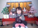
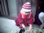

2001年3月29日 18時39分撮影
やっとこさ新大阪まで帰ってきました。由起子バク睡！
せっかく新幹線「ひかりRail Star」に乗ったのにぃ。。。2001年3月29日 13時52分撮影
ショーを待つ間に自分で写しました。
インターネットビューカムを使って。2001年3月29日 13時12分撮影
倉敷チボリ公園の観覧車にて。久々の遊園地に大喜び！
しかし、とっても寒い。。。ママはブルブル・・・。2001年3月24日 11時47分撮影
ハイキングの解説タイム。。。由起子にとっては、ラムネを
食べる休憩タイム。2001年3月11日撮影
おじいちゃん孝行・おばあちゃん孝行でご招待した
「大相撲・春場所」＜大阪府立体育館にて＞2001年3月4日撮影
ママがとっても感動した保育所の「春まつり」。病みあがり
だというのに元気に飛び跳ねる由起子。2001年2月12日 10時6分撮影
ラジオウォーク出発時点の「桜井小学校」にて。
ショイコの乗り心地は良さそうです。2001年2月11日 11時12分撮影
ニッカー。こんなアップはあんまり載せたくありません。
だって、ダンゴのお鼻はどうみてもママ似なんだものぉ〜！
2001年2月11日 11時11分撮影
お家のお雛さまを飾りました。早いもので、今年で３回目の
「桃の節句」を迎えます。
2001年2月4日 15時37分撮影
今はもう立派なニワトリになったコッコちゃんの餌にと、
葉っぱを刻んでいます。